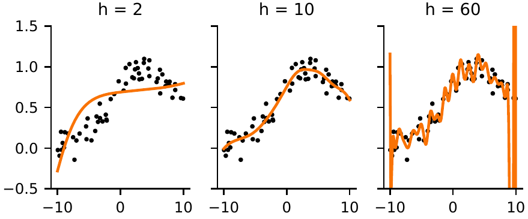
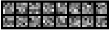
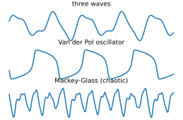
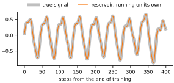

In the last chapter we froze AlexNet’s convolutional layers and trained only a new last layer. The frozen layers did most of the work, but they were not just any layers: they had been trained for days on a million photographs. This chapter asks a stranger question. What if the frozen layers had never been trained at all? What if their weights were simply random?
We have seen a hint already. In Chapter 14, the first-layer kernels of a trained network were still 97 percent the random patterns they started as, and kernels started smaller, which moved more, did no better. Here we take the idea to its limit and build networks whose hidden layers are random and stay random. Only the last layer learns, and it does not even need gradient descent: its weights can be solved for in a single step. Then we will measure, honestly, how far random features go on digits, on clothing and on photographs, and meet the same idea in time: a random network that remembers a signal and learns to continue it.
A curve from random bends
Start small, with points scattered around a smooth bump:
rng = np.random.default_rng(0)
x = np.sort(rng.uniform(-10, 10, 60))
y = np.exp(-0.02 * (x - 4)**2) + 0.1 * rng.normal(size=60)
x_new = np.linspace(-10, 10, 400) # where we want predictionsTo fit them, send each through a layer of neurons with random weights and a , the S-shaped bend that rises from to 1. Each random neuron contributes a curve that bends at a different place and steepness. The output is a weighted sum of these curves. Choosing the weights of the sum to make the squared error as small as possible is called a least-squares problem, and NumPy’s pinv (short for pseudo-inverse) solves it in one call. The next section shows what it computes.
def random_layer(x, W, b):
return np.tanh(np.outer(x, W) + b) # (points, h)
def fit(h, seed=1):
r = np.random.default_rng(seed)
W, b = r.normal(0, 0.3, h), r.uniform(-3, 3, h) # random, then frozen
H = random_layer(x, W, b)
w_out = np.linalg.pinv(H) @ y # solved, not trained
return random_layer(x_new, W, b) @ w_out
fig, axes = plt.subplots(1, 3, figsize=(4.6, 1.6), sharey=True)
for ax, h in zip(axes, [2, 10, 60]):
ax.plot(x, y, 'k.', ms=3)
ax.plot(x_new, fit(h), color='#f97306')
ax.set_ylim(-0.5, 1.5)
ax.set_title(f'h = {h}')
plt.show()
Two random curves cannot make a bump. Ten can, and the fit is good (Figure 17.1). With sixty curves for sixty points, the fit chases every wiggle of the noise and swings wildly, worst of all near the edges, a textbook case of the memorizing we met in Chapter 12. Random neurons are raw material, and the output layer’s only job is to choose a mixture of them.
Solving instead of training
Now the same idea on MNIST. We load the images as rows of 784 numbers, as in Chapter 10:
from torchvision.datasets import MNIST, FashionMNIST
def load(dataset):
train = dataset('data', train=True, download=True)
test = dataset('data', train=False, download=True)
X = train.data.reshape(-1, 784).float().to(device) / 255
X_test = test.data.reshape(-1, 784).float().to(device) / 255
return X, train.targets.to(device), X_test, test.targets.to(device)
X, Y, X_test, Y_test = load(MNIST)
print(X.shape, X_test.shape)torch.Size([60000, 784]) torch.Size([10000, 784])
Start with no hidden layer at all: a single weight matrix W from the 784 pixels to ten outputs, trained to make each output 1 for the correct digit and 0 for the others. The targets T are rows of zeros with a 1 for the correct digit, and the loss is the squared error. We already know how to train that, by rolling downhill:
T = F.one_hot(Y, 10).float() # targets: a 1 for the right digit
W = torch.zeros(784, 10, device=device, requires_grad=True)
optimizer = torch.optim.SGD([W], lr=0.05)
for step in range(5001):
loss = ((X @ W - T)**2).mean() # squared error
optimizer.zero_grad()
loss.backward()
optimizer.step()
if step % 1000 == 0:
print(step, round(loss.item(), 4))0 0.1 1000 0.0418 2000 0.0409 3000 0.0405 4000 0.0402 5000 0.0401
The loss falls fast at first and then creeps. After 5,000 steps it is still going down. Now the shortcut. For a linear output and a squared-error loss, the loss is a perfect bowl: plot it against any weight and you get a parabola, like the of Chapter 11. A bowl has a single lowest point, and where the slope is zero in every direction can be worked out directly. If is the matrix of features, one row per image, the best weights satisfy You do not need to follow the algebra: it is just “slope equals zero” written for all the weights at once. It is a system of linear equations, one per weight, and torch.linalg.solve solves it in one call. The small number , called the ridge, adds a penalty for large weights; is the identity matrix, ones on the diagonal and zeros elsewhere, which is how the penalty reaches every weight. We will see in a moment why the ridge matters. (The pinv of the last section computes the same answer with a vanishingly small .)
def solve(H, Y, ridge=1.0):
"""The output weights that best map features H to one-hot Y."""
T = F.one_hot(Y, 10).cpu().double()
Hd = H.cpu().double() # 64-bit numbers, see below
G = Hd.T @ Hd + ridge * torch.eye(H.shape[1], dtype=torch.float64)
W = torch.linalg.solve(G, Hd.T @ T) # the bottom of the bowl
return W.float().to(H.device)
def readout_accuracy(H, W, Y):
return ((H @ W).argmax(dim=1) == Y).float().mean().item()
W = solve(X, Y)
print('loss ', round(((X @ W - T)**2).mean().item(), 4))
print('train', round(readout_accuracy(X, W, Y), 4))
print('test ', round(readout_accuracy(X_test, W, Y_test), 4))loss 0.0391 train 0.8519 test 0.8534
The solved weights reach a lower loss, 0.0391, than 5,000 steps of gradient descent managed (0.0401): they sit at the bottom of the bowl the descent was still rolling toward. They get 85 percent of the test digits right, less than the 92 percent the trained linear classifier of Chapter 11 reached. That is because squared error is not the right loss for classifying. It cares about getting every output exactly 0 or 1, not just about which output is largest. But the shortcut is fast and exact, and from here on the features are the weak point, not the solver. (solve does its arithmetic in 64-bit numbers on the processor; we will see why that matters, too. The helper readout_accuracy takes features and output weights.)
A random hidden layer
So let’s improve the features with a hidden layer of ReLU neurons whose weights are random and are never trained. Scaling the random weights by keeps the hidden values a sensible size, the square-root law of Chapter 9 at work. We solve for the output layer, and try several widths:
torch.manual_seed(0)
def random_features(X, W1):
return torch.relu(X @ W1)
for h in [100, 500, 1000, 2000, 4000]:
W1 = torch.randn(784, h, device=device) / 784**0.5 # never trained
H = random_features(X, W1)
W2 = solve(H, Y)
acc = readout_accuracy(random_features(X_test, W1), W2, Y_test)
print(f'{h:5d} random neurons test {acc:.4f}')100 random neurons test 0.8182 500 random neurons test 0.9181 1000 random neurons test 0.9446 2000 random neurons test 0.9565 4000 random neurons test 0.9679
A layer of 4,000 random neurons takes us to almost 97 percent. Nothing in that layer was learned. Each neuron computes some arbitrary mixture of the pixels, and among thousands of arbitrary mixtures there are enough useful ones for the output layer to choose from. Networks built this way are called random-feature models; the idea appears in the random vector functional-link networks of Yoh-Han Pao and colleagues in the early 1990s, was put on a firm mathematical footing by Ali Rahimi and Benjamin Recht in 2007, and is also known by the name Guang-Bin Huang and colleagues gave it, extreme learning machines.
Compare that with the trained network of Chapter 12: two hidden layers of 256 neurons, every weight adjusted by gradient descent, 98.1 percent on the same test set. Training buys accuracy, and it buys economy. The trained network needed an eighth as many hidden neurons (512 against 4,000) to make fewer than two-thirds as many mistakes. But a random layer gets surprisingly far.
Excursion: too many features
This section and the precision lesson inside it are a closer look at the ridge; nothing later depends on them, and you can skip to Random kernels. Now the ridge. Here is what happens when the number of training images changes while the 4,000 random features stay the same. For each size we solve twice: with essentially no ridge (), reporting training and test accuracy and the size of the solved weights (their length, ), and with the ridge that does best on 10,000 validation images, never on the test set:
# H and W1 are still the 4,000-neuron layer from the last pass above
H_test = random_features(X_test, W1)
H_val, Y_val = H[50_000:], Y[50_000:] # for choosing the ridge
def best_ridge(H, Y):
scores = {r: readout_accuracy(H_val, solve(H, Y, r), Y_val)
for r in [0.01, 1, 10, 100]}
return max(scores, key=scores.get)
print('images train test weight size | ridge test')
for n in [2000, 3000, 3800, 4000, 4200, 5000, 8000]:
W2 = solve(H[:n], Y[:n], 1e-8) # essentially no ridge
train_acc = readout_accuracy(H[:n], W2, Y[:n])
plain = readout_accuracy(H_test, W2, Y_test)
r = best_ridge(H[:n], Y[:n])
tuned = readout_accuracy(H_test, solve(H[:n], Y[:n], r), Y_test)
print(f'{n:6d} {train_acc:.3f} {plain:.3f} {W2.norm():9.0f} |'
f' {r:<5g} {tuned:.3f}')images train test weight size | ridge test 2000 1.000 0.900 9 | 10 0.929 3000 1.000 0.855 16 | 10 0.937 3800 1.000 0.590 41 | 10 0.942 4000 1.000 0.109 1573 | 10 0.943 4200 1.000 0.595 47 | 10 0.945 5000 1.000 0.855 22 | 10 0.948 8000 1.000 0.940 13 | 10 0.955
With no ridge, every row classifies all of its training images correctly. With 2,000 images the test accuracy is still 90 percent: with fewer equations than unknowns, the solver picks the solution with the smallest weights, which is about as tame as an exact fit can be. But as the number of images approaches the number of features, the weights grow, and at 4,000 images, exactly as many as there are features, they are more than a hundred times larger than at 2,000 and accuracy collapses to 11 percent, no better than guessing. With as many equations as unknowns there is exactly one exact fit, and to pass through every one of 4,000 noisy targets it needs enormous weights. Add more images and both recover. Is this a fluke of one random layer? Three other random layers, at exactly 4,000 images:
for seed in [1, 2, 3]: # three other random layers
torch.manual_seed(seed)
W1_s = torch.randn(784, 4000, device=device) / 784**0.5
Hs = random_features(X[:4000], W1_s)
Hs_test = random_features(X_test, W1_s)
W2 = solve(Hs, Y[:4000], 1e-8)
print(seed, round(readout_accuracy(Hs_test, W2, Y_test), 3))1 0.152 2 0.124 3 0.121
All three collapse. A ridge of 10 avoids the whole problem; it never needs to fit the training set exactly. This is regularization: a preference for simple answers, which matters most when the data are only just enough. The dip at the point where images and features are equal has a name, double descent, and it has been found in large networks too.
There is a practical lesson hiding in solve. It converts the features to 64-bit numbers before multiplying them. Here is the same 2,000-image solve done the other way round, with the products added up in the 32-bit numbers that graphics cards prefer and converted afterwards:
def solve32(H, Y, ridge): # adds up in 32-bit numbers
T = F.one_hot(Y, 10).float()
G = (H.T @ H).cpu().double() # converted too late
G += ridge * torch.eye(H.shape[1], dtype=torch.float64)
W = torch.linalg.solve(G, (H.T @ T).cpu().double())
return W.float().to(H.device)
for name, f in [('32-bit', solve32), ('64-bit', solve)]:
W2 = f(H[:2000], Y[:2000], 1e-4)
print(name, round(readout_accuracy(H_test, W2, Y_test), 3))32-bit 0.14 64-bit 0.9
Same formula, same data: 14 percent instead of 90. A 32-bit number keeps about seven significant digits. The sums in are large, and their rounding errors swamp the tiny ridge of , which changes the answer completely. The deeper cause is that multiplying by its own transpose squares how sensitive the problem is to rounding, so there are three cures: 64-bit numbers, a ridge large enough to stand above the rounding errors, or a solver such as torch.linalg.lstsq that never forms at all. When results are mysteriously bad, check the precision as well as the code.
Random kernels
The random layer above ignores the shape of the image, as every fully connected layer does. What if the random features are convolutions? We make 64 random kernels, each shifted to average zero, so that it responds to changes in brightness rather than to brightness itself, and scaled to the same length. Figure 17.2 shows 16 of them, drawn with the montage_plot helper of Chapter 8:
torch.manual_seed(0)
kernels = torch.randn(64, 1, 5, 5, device=device)
kernels -= kernels.mean(dim=(2, 3), keepdim=True) # average zero
kernels /= kernels.norm(dim=(2, 3), keepdim=True) # all the same size
shown = kernels[:16, 0].cpu()
montage_plot(shown, size=4.0, grid_shape=(2, 8), symmetric=True)
Each image is convolved with all 64 kernels, passed through a ReLU, and max-pooled down to : the same kinds of operations as the network of Chapter 14, though it had two convolutional layers and this has one, and here nothing will be trained. That gives features per image, and we solve for the output layer as before:
def conv_features(X, batch=5000):
out = []
for i in range(0, len(X), batch):
x = X[i:i + batch].reshape(-1, 1, 28, 28)
z = torch.relu(F.conv2d(x, kernels, padding=2)) # (n,64,28,28)
z = F.max_pool2d(z, 4) # (n,64,7,7)
out.append(z.flatten(1))
return torch.cat(out)
H = conv_features(X)
H_test = conv_features(X_test)
print(H.shape)
W2 = solve(H, Y)
print('test', round(readout_accuracy(H_test, W2, Y_test), 4))torch.Size([60000, 3136]) test 0.9764
Random convolutions do better than 4,000 random neurons with fewer features, 97.6 percent against 96.8. The structure of a convolution, local and shared across the image, is worth something even when its weights are nonsense. Now clothing:
Xf, Yf, Xf_test, Yf_test = load(FashionMNIST)
W = solve(Xf, Yf)
print('pixels ', round(readout_accuracy(Xf_test, W, Yf_test), 4))
Hf, Hf_test = conv_features(Xf), conv_features(Xf_test)
W2 = solve(Hf, Yf)
print('random kernels ', round(readout_accuracy(Hf_test, W2, Yf_test), 4))pixels 0.8086 random kernels 0.8936
Solving on the raw pixels gives 81 percent; random kernels give 89. The trained two-layer network of Chapter 14 reached 90.9 percent on the same test set, in a single untuned run. On small grayscale images, then, a single layer of random convolutions and a solved readout get within a point and a half of a network that was trained throughout. Counted as mistakes, that is 10.6 percent against 9.1, so the trained network still makes about a seventh fewer errors, from one run each and with no tuning on either side. Using random convolutions as features has a history of its own: Kevin Jarrett and colleagues in 2009 and Andrew Saxe and colleagues in 2011 found that random-weight convolutional networks did surprisingly well, and that the architecture accounted for much of it.
Random features on photographs
Does the same hold for real photographs? We can test it on the ants and bees of the last chapter, with the setup of that chapter: AlexNet with every layer frozen except the last. Instead of training the last layer, we solve for it, choosing the ridge on the same 50 validation photographs as before. The only difference between the runs is whether the frozen weights are AlexNet’s trained ones or random ones.
from torchvision import transforms
from torchvision.datasets import ImageFolder
from torch.utils.data import DataLoader
tf = transforms.Compose([
transforms.Resize(256), transforms.CenterCrop(224),
transforms.ToTensor(),
transforms.Normalize([0.485, 0.456, 0.406], [0.229, 0.224, 0.225])])
train_set = ImageFolder('data/hymenoptera_data/train', tf)
test_set = ImageFolder('data/hymenoptera_data/val', tf)
def last_layer_inputs(net, dataset): # what Chapter 16's new layer saw
net.classifier[6] = torch.nn.Identity()
net = net.to(device).eval()
H, Y = [], []
with torch.no_grad():
for x, y in DataLoader(dataset, batch_size=64):
H.append(net(x.to(device)))
Y.append(y.to(device))
return torch.cat(H), torch.cat(Y)from torchvision.models import alexnet, AlexNet_Weights
g = torch.Generator().manual_seed(0)
order = torch.randperm(len(train_set), generator=g)
val, fit_on = order[:50], order[50:] # as in Chapter 16
def photo_test(net):
H, Y = last_layer_inputs(net, train_set)
H_t, Y_t = last_layer_inputs(net, test_set)
def val_score(r):
W = solve(H[fit_on], Y[fit_on], r)
return readout_accuracy(H[val], W, Y[val])
scores = {r: val_score(r) for r in [1e-6, 1e-4, 1e-2, 1]}
r = max(scores, key=scores.get)
return readout_accuracy(H_t, solve(H[fit_on], Y[fit_on], r), Y_t)
trained = alexnet(weights=AlexNet_Weights.DEFAULT)
print('pretrained', round(photo_test(trained), 3))
for seed in range(3):
torch.manual_seed(seed)
print('random ', round(photo_test(alexnet()), 3))pretrained 0.895 random 0.667 random 0.693 random 0.627
The trained features give 89.5 percent on the test photographs, in line with the 86.9 percent of the trained last layer in Chapter 16. Three different random AlexNets give 63 to 69 percent. That is far better than the 46 percent of the network trained from scratch in the last chapter, which never learned anything, so random features carry real information about photographs. But here, unlike on digits, the learned features are worth twenty to thirty points. Photographs are far more varied than small grayscale digits, and the patterns that separate an ant from a bee are not found by a random AlexNet as built here. Remember, though, what the last chapter found: ants and bees are among AlexNet’s own thousand categories, so its trained features were made for exactly this question, and the gap overstates what learned features are worth on a category that is truly new. For that, try the comparison on photographs of your own.
Excursion: a random memory
Random features work in time, too. This section moves from images to signals, and nothing later depends on it. Here the task is to learn a signal well enough to continue it on our own. We use three signals (Figure 17.3). The first is three waves added together. The second is the swing of a Van der Pol oscillator, a simple nonlinear rule first used to model electronic circuits and heartbeats, which produces a lopsided, spiky rhythm. The third is the Mackey–Glass equation, which Michael Mackey and Leon Glass proposed in 1977 as a model of the production of blood cells: the rate of production depends on the level of cells some time ago, and that delay makes it chaotic. It never repeats, and, like the tripling recipe of Chapter 9, it turns a tiny difference now into a large one later. The code simulates the first two in tiny steps, exactly as Chapter 13 simulated a drumhead, and the third the same way, keeping a list of its past to look back into.
t = np.arange(5000) * 0.05
waves = np.sin(t) + 0.5 * np.sin(2 * t + 1) * np.cos(0.5 * t)
def van_der_pol(mu=3.0, dt=0.05, n=5000):
x, v, out = 1.0, 0.0, []
for i in range(n + 2000): # skip 2,000 to settle
for _ in range(10): # ten small steps per sample
a = mu * (1 - x**2) * v - x # the oscillator's rule
x, v = x + dt / 10 * v, v + dt / 10 * a
out.append(x)
out = np.array(out[2000:])
return out / np.abs(out).max()
def mackey_glass(delay=17, n=5000):
x, out = [1.2] * (10 * delay + 1), [] # a steady past to start
for i in range(n + 1000): # skip 1,000 to settle
for _ in range(10): # ten small steps per sample
old = x[-10 * delay - 1] # the level 17 samples ago
x.append(x[-1] + 0.1 * (0.2 * old / (1 + old**10)
- 0.1 * x[-1]))
out.append(x[-1])
out = np.array(out[1000:])
out = out - out.mean()
return out / np.abs(out).max()
signal = van_der_pol()
chaos = mackey_glass()
plt.figure(figsize=(4.6, 2.8))
for i, (s, name) in enumerate([(waves, 'three waves'),
(signal, 'Van der Pol oscillator'),
(chaos, 'Mackey-Glass (chaotic)')]):
plt.subplot(3, 1, i + 1)
plt.plot(s[:600])
plt.title(name)
plt.axis('off')
plt.show()
Before anything clever, a control. The simplest way to continue a signal is a linear rule: predict the next value as a weighted sum of the last few, choose the weights by least squares, then feed the predictions back in and let the rule run on its own for 400 steps. We give it 6, 30, 100 and 500 past values to work with:
def continue_linear(s, order=6, train_len=3000, steps=400):
rows = np.array([s[i - order:i] for i in range(order, train_len)])
c = np.linalg.lstsq(rows, s[order:train_len], rcond=None)[0]
history = list(s[train_len - order:train_len])
for i in range(steps): # run on its own
history.append(np.dot(c, history[-order:]))
future = np.array(history[order:])
return np.abs(future - s[train_len:train_len + steps]).mean()
for name, s in [('three waves', waves), ('Van der Pol', signal),
('Mackey-Glass', chaos)]:
print(f'{name:12s}', [f'{continue_linear(s, k):.1e}'
for k in (6, 30, 100, 500)])three waves ['1.7e-07', '1.0e-11', '2.1e-14', '6.1e-15'] Van der Pol ['6.4e-01', '5.4e-01', '4.4e-10', '4.4e-13'] Mackey-Glass ['3.1e-01', '2.7e-01', '2.5e-01', '2.2e-01']
Six numbers continue the three waves almost perfectly, to seven decimal places, and better as the rule gets longer. That is no accident: a sum of three waves obeys an exact linear rule of length six, and least squares finds it. The oscillator fails with 6 or 30 numbers but is continued almost perfectly with 100. Its rhythm repeats about every 180 samples, and a rule that can see far enough back can simply copy the shape of the last cycle; any signal that repeats can be continued that way. The chaotic signal is another matter. Even with 500 past values the error is about a fifth of the signal’s size: it never repeats, so there is no cycle to copy, and its rule is nonlinear. That is the signal worth giving to a network.
The network for this job is a reservoir: a few hundred neurons connected to each other at random, with the incoming signal fed to all of them. At each time step, every neuron’s new value is a of the input and of all the neurons’ old values. Because they feed into one another, the current state is a mixture of everything the signal has done lately: an echo of the past. (Herbert Jaeger’s echo state networks of 2001 and Wolfgang Maass’s liquid state machines of 2002 are the two original versions of the idea, and Mackey–Glass has been their favorite test from the start.)
How long the echo lasts depends on how strongly the neurons pass activity around the loop. Here is an experiment: give 500 randomly connected neurons a kick, then no input at all, and watch the size of their activity at three different strengths of the connections:
r = np.random.default_rng(0)
n = 500
W_raw = r.normal(size=(n, n))
radius = np.max(np.abs(np.linalg.eigvals(W_raw)))
for strength in [0.5, 0.95, 1.2]:
W_res = W_raw * strength / radius
state = np.tanh(r.uniform(-1, 1, n)) # a kick, then no input
sizes = []
for step in range(201):
if step in (0, 10, 50, 100, 200):
sizes.append(f'{np.sqrt(np.mean(state**2)):.4f}')
state = np.tanh(W_res @ state)
print(strength, sizes)0.5 ['0.4846', '0.0003', '0.0000', '0.0000', '0.0000'] 0.95 ['0.4909', '0.1293', '0.0038', '0.0001', '0.0000'] 1.2 ['0.5011', '0.3806', '0.3918', '0.4259', '0.4342']
At strength 0.5 the kick is gone within ten steps, too quickly to remember anything. At 1.2 it never dies: the network keeps itself going and forgets the input in its own chatter. At 0.95 the echo lingers for dozens of steps and then fades, which is what a memory should do. The strength is measured by a number called the spectral radius of the connection matrix. You do not need its definition (it is the largest size among the matrix’s eigenvalues) to use it: dividing a random matrix by its spectral radius and multiplying by 0.95 puts it just below the edge, as W_raw * strength / radius did above.
Now the reservoir. Its weights are random and are never trained. Only the readout, a weighted sum of the 500 neurons that should equal the next value of the signal, is solved for, exactly as before. The function fit_readout runs the training signal through the reservoir, collects its states, and solves; step takes the bend f as an argument, so that we can later swap it out.
r = np.random.default_rng(1)
W_in = r.uniform(-0.5, 0.5, n) # all three are random
b = r.uniform(-0.2, 0.2, n) # and never trained
W_res = W_raw * 0.95 / radius # just below the edge
def step(u, state, f=np.tanh):
return f(W_in * u + W_res @ state + b)
def fit_readout(s, f=np.tanh, train_len=3000):
state, states = np.zeros(n), []
for u in s[:train_len]:
state = step(u, state, f)
states.append(state)
S = np.array(states[100:]) # skip the warm-up
targets = s[101:train_len + 1] # the value that came next
w_out = np.linalg.solve(S.T @ S + 1e-9 * np.eye(n), S.T @ targets)
print(f'one-step error on the training signal '
f'{np.abs(S @ w_out - targets).mean():.1e}')
return w_out, state
w_out, state = fit_readout(chaos)one-step error on the training signal 5.5e-06
On the training signal the readout predicts the next value almost perfectly. The real test is to let the reservoir run on its own: feed each prediction back in as the next input and see whether it can continue the chaotic signal with no further help (Figure 17.4).
def run_on_its_own(w_out, state, u, f=np.tanh, steps=400):
generated = []
for i in range(steps):
state = step(u, state, f)
u = state @ w_out # its own prediction
generated.append(u) # becomes the next input
return np.array(generated)
generated = run_on_its_own(w_out, state, chaos[3000])
truth = chaos[3001:3401]
print(f'average error {np.abs(truth - generated).mean():.1e}')
plt.figure(figsize=(4.6, 1.6))
plt.plot(truth, 'k', lw=5, alpha=0.25, label='true signal')
plt.plot(generated, color='#f97306', lw=1,
label='reservoir, running on its own')
plt.legend(frameon=False, loc='lower center', ncol=2,
bbox_to_anchor=(0.5, 1.0))
plt.xlabel('steps from the end of training')
plt.show()average error 1.3e-03

Where the best linear rule, with as many weights as the readout, went wrong by a fifth of the signal’s size, the random reservoir stays within about a thousandth of it for 400 steps. Is that the reservoir’s memory, or its bends? The reservoir has the same 500 numbers to work with as the longest linear rule. A fair control keeps everything else, the same random connections, the same readout and the same signal, and takes away only the :
def no_bend(z): # tanh removed
return z
w_flat, state_flat = fit_readout(chaos, no_bend)
flat = run_on_its_own(w_flat, state_flat, chaos[3000], no_bend)
print(f'average error {np.abs(truth - flat).mean():.1e}')one-step error on the training signal 1.6e-04 average error 2.6e-01
Without its bends the reservoir is no better than the linear rule, because it is a linear rule: every neuron is then a weighted sum of past inputs. Memory alone continued the repeating oscillator; the chaotic signal needs memory and nonlinearity together, and the random neurons give the readout enough raw material to express its rule.
Be warned that the trick has limits. No predictor can follow a chaotic signal forever, because its own tiny errors grow just as the signal’s differences do; run rf_generate for 1,500 steps and the reservoir eventually parts company with the truth. And with a much stronger ridge or a spectral radius far from 1, it drifts or settles into a rhythm of its own; the exercises invite you to find out when. The recurrent networks used for language and speech before the transformer had this same looping shape, but with every weight trained, at great effort.
How much must be learned?
Random features turn the usual question around. Instead of asking how to train every weight, they ask how few weights need training at all. The answer depends on the data. On small clothing images, a random layer of the right shape and a solved readout come within a point or two of a fully trained network, though the trained one still makes fewer mistakes. On photographs, learned features are worth twenty or thirty points, and that is where training, and borrowing someone else’s training, pays. Two things hold everywhere: the shape of a network, convolutions for images and loops for signals, is worth a great deal even before any weight is learned; and training makes features far more compact, since the trained networks needed a fraction of the units.
So far every network in this book has answered questions about images: what digit, what garment, ant or bee. In the next part we turn the question around. Instead of asking what is in an image, we will ask a network to make one.